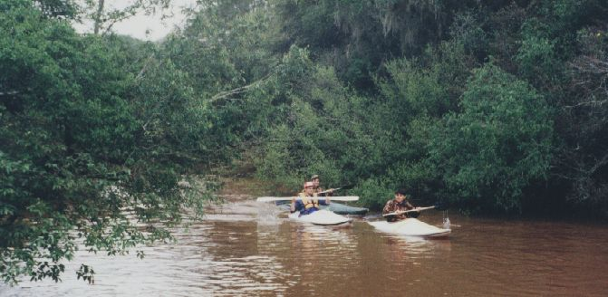
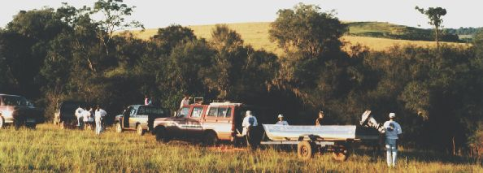
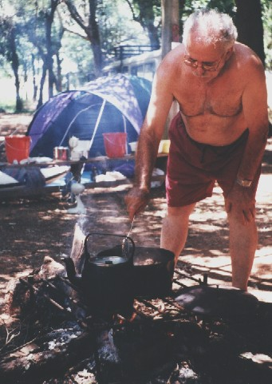
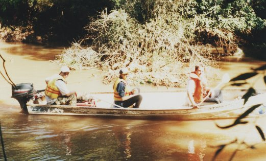
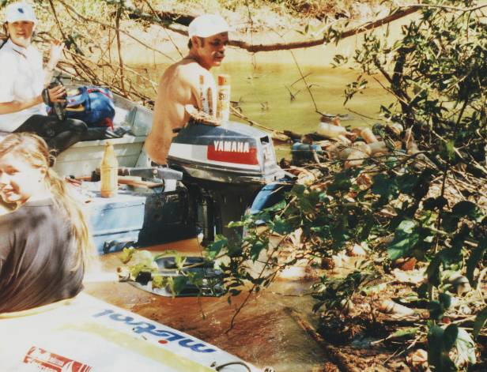
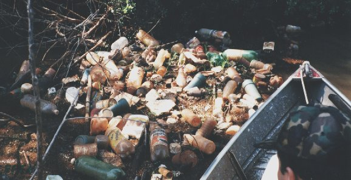
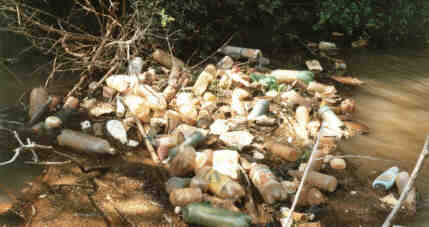

|
Espaço
Cultural
CEPEN
|

|
Projeto
Bacia do Rio Uruguai
Campanhas:
"Descidas
pela preservação do Rio da Várzea"

Local:
Rio da Várzea, Carazinho - RS - Brasil Foto: arquivo CEPEN
/ 297p / Marcelo De Negri Xavier
Nilton
Marques, Marcelo Xavier e D. Giovane
Equipe
pioneira, que dias antes faz o reconhecimento de trechos a serem descidos
pelo grupo maior.

Local:
Parque do Várzea - Carazinho - RS - Brasil Foto: arquivo CEPEN
/ 274p / Marcelo De Negri Xavier
Coordenada
pelo Sr. Joaquim Sarmento, a equipe de apoio à postos, numa das
largadas.

Local:
Margens do Rio Uruguai - São Borja - RS - Brasil Foto: arquivo
CEPEN / 453pe / Marcelo De Negri Xavier
Grande
motivação para que os participantes resistam às adversidades,
é gastronômica,
preparada
e chefiada pessoalmente pelo Sr. Joaquim Sarmento, como no flagrante acima.
Além
da aventura, diversão e lazer,
o
grupo confere a poluição dos trechos de rio percorridos.
Comenta-se:
"Infelizmente, não temos somente alegria, diversão e lazer
para reportarmos".

Local:
Rio da Várzea, Carazinho - RS - Brasil Foto: arquivo CEPEN
/ 283p / Marcelo De Negri Xavier
O
lixo que desce o rio flutuando,
fica
preso temporariamente nas galhadas que pendem para dentro da água.

Local:
Rio da Várzea, Carazinho - RS - Brasil Foto: arquivo CEPEN
/ 286p / Marcelo De Negri Xavier
Mirta
Bohn (abaixo), Sandra Sarmento e Fernando L. Vieira Sarmento,
testemunhando
a penúria do Rio da Várzea.

Local:
Rio da Várzea, Carazinho - RS - Brasil Foto: arquivo CEPEN
/ 287p / Marcelo De Negri Xavier
Amontoados
flutuantes de lixo testemunhados por D. Giovane.

Local:
Rio da Várzea, Carazinho - RS - Brasil Foto: arquivo CEPEN
/ 288p / Marcelo De Negri Xavier
Amontoados
flutuantes de lixo.
 Local:
Fazenda Branda, margens do Rio da Várzea, Carazinho - RS - Brasil
Foto: arquivo CEPEN / 297p / Marcelo De Negri Xavier
Clube
DORADO DE CÁ "em peso",
compondo
a turma que venceu o trecho de oito horas de descida ininterrupta.
Local:
Fazenda Branda, margens do Rio da Várzea, Carazinho - RS - Brasil
Foto: arquivo CEPEN / 297p / Marcelo De Negri Xavier
Clube
DORADO DE CÁ "em peso",
compondo
a turma que venceu o trecho de oito horas de descida ininterrupta.